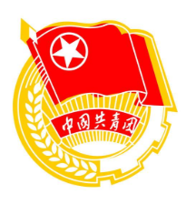

三会两制一课——支部大会

支部大会是指由团的支部委员会召集的支部全体团员参加的会议，一般每季度召开一次，根据工作需要可随时召开。
支部大会的主要任务包括:
·学习党的理论，学习党和国家有关重要讲话精神
·传达学习党的路线、方针、政策和团的政策文件、重要会议精神，传达同级党组织、上级团组织的决议、指示等,研究制定贯彻落实的计划和措施
·听取和讨论支部委员会的工作报告，对支部委员会的工作进行审议和监督
·选举新的支部委员会和出席上级团代会的代表，增补和罢免支部委员
·讨论接收新团员
·开展团员教育评议工作研究决定对团员的奖励，推荐优秀团员作入党积极分子
·讨论通过对团员的处分
·决定除名要求退团和自行脱团的团员
·开好团支部组织生活会; 研究决定本支部其他重要事项